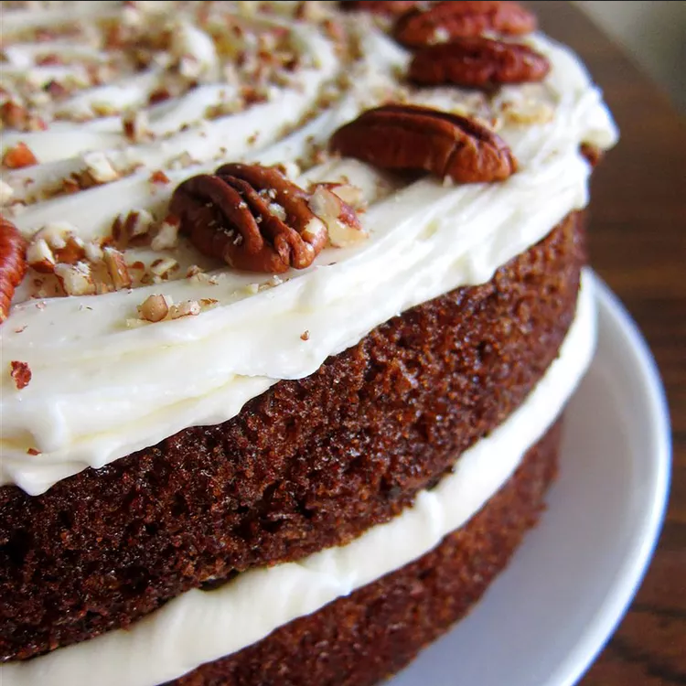

Back
Carrot Cake
This carrot cake is the best carrot cake you will ever have in your sorry life. Moist, dense, perhaps with pecans--it's a hard recipe to perfect.
But us here at Odin's Recipes have the faith. You can do it.
This recipe is from All Recipes. I hope you enjoy making this with your family.

This could be you
Ingredients
- 2 cups white sugar
- 1 ¼ cups vegetable oil
- 4 eggs
- 2 teaspoons vanilla extract
- 2 cups all-purpose flour
- 2 teaspoons baking soda
- 2 teaspoons baking powder
- 2 teaspoons ground cinnamon
- ½ teaspoon salt
- 3 cups grated carrots
- 2 cup chopped pecans
- ½ cup butter, softened
- 8 ounces cream cheese, softened
- 4 cups confectioners' sugar
- 1 teaspoon vanilla extract
Directions
- Preheat the oven to 350 degrees F (175 degrees C). Grease and flour a 9x13 inch pan.
- Beat sugar, oil, eggs, and 2 teaspoons vanilla together in a large bowl with an electric mixer until well combined. Mix in flour, baking soda, baking powder, cinnamon, and salt. Stir in carrots. Fold in 1 cup pecans. Pour into the prepared pan.
- Bake in the preheated oven until a toothpick inserted into the center of the cake comes out clean, about 40 minutes. Let cool in the pan for 10 minutes, then turn out onto a wire rack and cool completely.
- To make the frosting: Beat butter, cream cheese, confectioners' sugar, and 1 teaspoon vanilla together in a large bowl with an electric mixer until smooth and creamy. Stir in 1 cup chopped pecans. Frost the cooled cake.